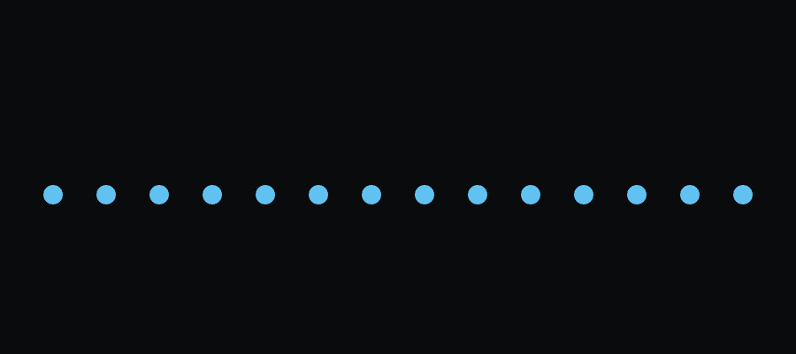
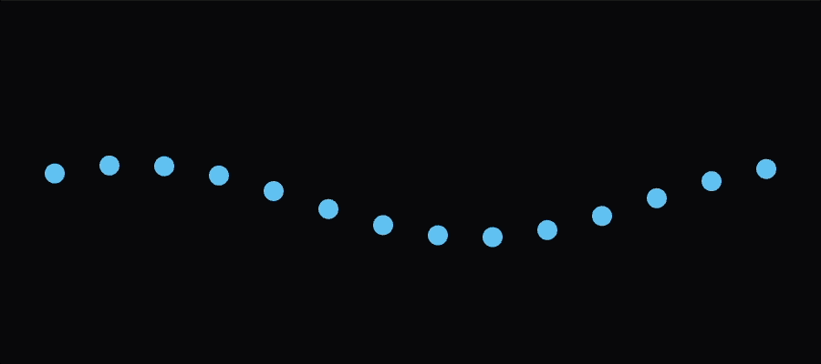
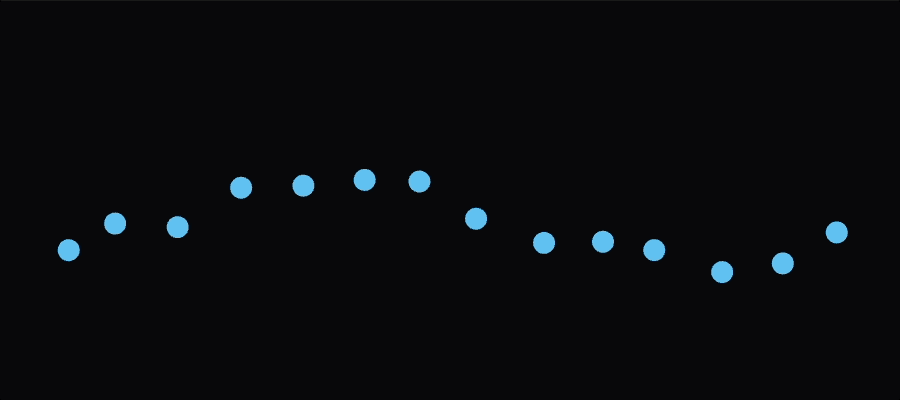
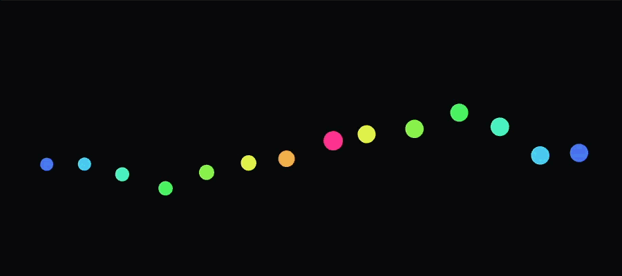
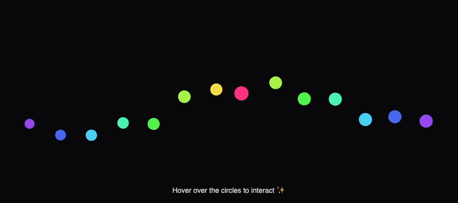

Documentation Process
Iteration 1 – Creating the Circles

Started with a simple row of evenly spaced circles with a dark background.
Iteration 2 – Sin(y) Oscillation

Added motion using sin() to oscillate the circles up and down. All circles move to the same time variable of 1 sin wave.
Iteration 3 – Organic Wobble + Noise

Layered Perlin noise on the x and y for a more organic feel. The noise adds soft wobbles and unique personality to each circle.
Iteration 4 – Breathing + Scale & Color Gradient

Added a “breathing” effect by oscillating each circle’s size with sine and noise. Mapped HSB color from the center circle radiating outwards.
Iteration 5 – Adding a Hero Circle + Unique Behavior

Made the center the “hero” circle. Created a short delay using millis() and a time threshold, making it break away into a more dramatic movement path with unpredictable oscillation and scale rhythms.
Iteration 6 – Hover Interaction & Final Polish

Added interaction element to each circle. Hovering over a circle makes it bigger, brighter, and create a halo ring. Interact with the sketch at the top of the page :)